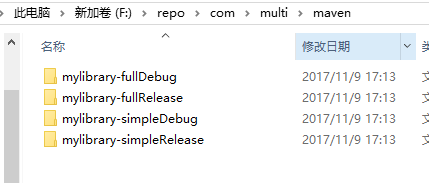

前言
为了精简目前底层的基础组件库, 拆分出必要依赖项目(有一定精简)和完全的依赖项目,
第一想法是在library上构建变种(Variant)版本, 一次发布所有的变种,在研究了一些相关的资料后,
最后完美解决
基础部署到maven仓库
我们可以通过gradle部署到远程或者本地的maven仓库,
首先添加maven插件, 然后我们通过updaloadArchives任务自动生成POM文件, 并打包部署到指定的仓库中
1 | apply plugin: 'maven' // 添加maven插件 |
当然我们也可以通过authentication来添加服务器的认证信息, 也可以定义快照(snapshot)仓库1
2
3
4
5
6
7
8
9
10
11
12apply plugin: 'maven' // 添加maven插件
uploadArchives {
repositories {
mavenDeployer {
repository(url: "maven仓库地址"){
authentication(userName: "yourUserName", password: "yourPsw")
}
snapshotRepository(url: "maven snapshot仓库地址"){
authentication(userName: "yourUserName", password: "yourPsw")
}
}
}
POM文件的自定义
我们可以针对POM做自定义处理, 最常见的就是设置版本号等等1
2
3
4
5
6
7
8
9
10
11
12apply plugin: 'maven' // 添加maven插件
uploadArchives {
repositories {
mavenDeployer {
repository(url: "maven仓库地址")
}
pom.groupId = "com.maven.test"
pom.artifactId = "myLibrary"
pom.version = "1.0.0"
pom.packaging = "aar"
}
}
针对上面的设置, 我们依赖引用的就应该是1
implementation "com.maven.test:myLibrary:1.0.0"
Maven默认每个项目只会处理一个artifact, 当我们library没有设置productFlavor和buildType时, 默认上传的是release的variant.
当我们两个variant代码不同, 依赖不同时, 需要生产不同的POM进行上传,这种情况下我们需要显示声明每个artifact, 并针对每个POM进行自定义上传.
在这方面我们可以分别参考MavenDeployer和MavenPom开放的API1
2
3
4
5
6
7
8
9
10
11
12
13
14
15
16
17
18
19
20
21
22
23
24
25
26
27
28
29
30
31
32
33
34
35
36
37
38
39
40
41
42
43
44// 上略
mavenDeployer {
repository(url: "仓库地址")
android.libraryVariants.all {variant->
def isFlavor = !variant.flavorName.isEmpty()
def _name = "${variant.name}"
// 生成多个pom
addFilter(_name){artifact, file->
true
}
// 对应pom属性设置
pom(_name).artifactId = project.archivesBaseName + "-" + _name
pom(_name).version = "1.0.0"
pom(_name).groupId = "com.maven.test"
pom(_name).packaging = 'aar'
// 自定义pom的依赖集
pom(_name).withXml{
def root = asNode()
def depsNode = root["dependencies"][0] ?: root.appendNode("dependencies")
def addDep = {
if (it.group == null) return // Avoid empty dependency nodes
def dependencyNode = depsNode.appendNode('dependency')
dependencyNode.appendNode('groupId', it.group)
dependencyNode.appendNode('artifactId', it.name)
dependencyNode.appendNode('version', it.version)
if (it.hasProperty('optional') && it.optional) {
dependencyNode.appendNode('optional', 'true')
}
}
// 添加基本依赖
configurations.api.allDependencies.each addDep
configurations.implementation.allDependencies.each addDep
// 添加特殊依赖
if (isFlavor) {
configurations["${_name}Implementation"].allDependencies.each addDep
def flavorName = variant.flavorName
configurations["${flavorName}Implementation"].allDependencies.each addDep
configurations["${_name}Api"].allDependencies.each addDep
configurations["${flavorName}Api"].allDependencies.each addDep
}
}
}
}
相关demo可以看这里
依赖对应的组件库
在成功发布后, 我们仓库内容应该如下图

假设我们的flavor分别为full和simple,当我们去依赖的时候, 就可以通过1
2releaseImplementation "com.maven.test:libraryNameFullRelease:1.0.0"
debugImplementation "com.maven.test:libraryNameFullDebug:1.0.0"